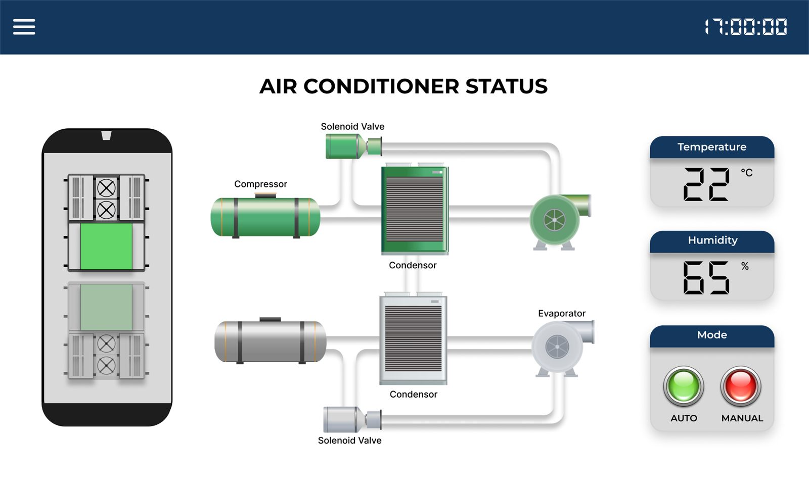
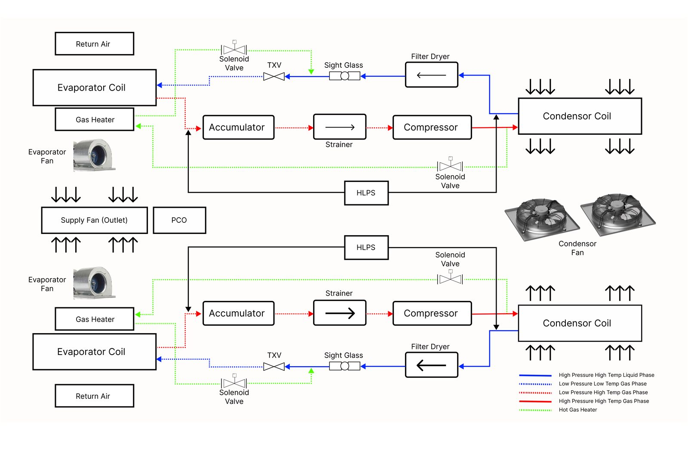

Case study
Making an invisible analog system legible to an operator.
A touchscreen HMI for the air conditioning system on a KAI KA-612 railway carriage, replacing a sealed relay panel with something a crew member can read at a glance.

The problem
How to automate the air conditioning with a PLC and make its operation visible on an HMI?
The KA-612 air conditioning ran on an analog circuit of relays, contactors and breakers: bulky, hard to modify, and silent about its own state.
A fault could sit in any of a dozen places, and finding it meant opening the panel and tracing the circuit by hand on a moving train.
The solution
Automating control, making it visible
Automatic mode
AUTO drives the compressors from carriage temperature thresholds, so the PLC holds the setpoint instead of an operator watching a dial.
Component-level visibility
Compressor, condenser, evaporator and valve are drawn individually, each coloured by its live PLC input rather than by decoration.
Faults by failure class
Eight named groups split the faults, so a red lamp always answers which component failed and what kind of failure it was.
Answers on the panel
The questions crews ask when cooling stops are answered on the screen itself, instead of in a manual kept somewhere else.
Control: actual reading above, set point below.
Monitoring State: faults grouped by class.
FAQ: answered on the panel.
Background
An analog AC panel can be switched, but it can't be read
Something is wrong with the AC, and the only way to find out what is to open the panel. With a relay panel you open the cabinet and trace the circuit by hand, on a moving train. With an HMI you read the temperature and see which component stopped, without opening the panel. So: automate the control with a PLC, and make the result visible on a screen.
CONTROLLER
WAGO PFC200 750-8212
LOGIC
Structured Text in CODESYS
CARRIAGE
Two AC units, two compressors each
MY SEAT
Six months at INKA, beside the PLC engineer
Research
Learn the machine before drawing the screen
Input came from the project lead, a wiring engineer, a panel operator and an AC system engineer. Four findings shaped the design.
FINDING 1
Operators need to know what went wrong, not just that something went wrong
When the system gives only a general error, troubleshooting still depends on checking the physical panel one component at a time.
Different faults can point to different parts of the AC system, so the interface needs to distinguish between them.
The final HMI therefore included component monitoring, fault monitoring and error handling, not a simple ON/OFF state.
FINDING 2
The HMI must reflect the real state of the machine
Every value shown needs to correspond to a real signal coming from the system.
Operators need an overview first, with the ability to inspect individual components when something changes.
FINDING 3
What can be displayed is limited by the signals the system actually provides
We cannot display information that does not exist as a physical signal in the panel.
The HMI has to be designed around the inputs and outputs that can actually be connected to the PLC.
FINDING 4
Complex AC behaviour needs to be translated into simple operator decisions
Operators should not need to understand the entire control logic just to know what action to take.
Showing system state, component status and control values separately makes complex information easier to interpret.
DOCUMENT
Handbook of Air Conditioning and Refrigeration
2nd edition, McGraw-Hill. The refrigeration cycle from first principles.
DOCUMENT
Technical Specification, 20,000 kCal/hr Rev A
IMS unit spec: the actual capacity, components and ratings on this carriage.
DOCUMENT
Kerja Praktik report
My own report on controlling and monitoring the KA 612 train AC unit with a PLC at PT. INKA Multi Solusi, written with teammates.
The mechanism
How the refrigeration system actually flows

01 · EVAPORATOR
Heat enters through the evaporator
Return air passes over the evaporator coil, where the refrigerant absorbs heat and evaporates into gas. The evaporator fan pushes the cooled air back into the carriage.
02 · COMPRESSOR
The compressor raises pressure
Low-pressure gas passes through the accumulator, which filters out remaining liquid, before reaching the compressor. HLPS (High Low Pressure Switch) can shut the compressor down outside a safe range.
03 · CONDENSER
The condenser releases heat to outside air
High-pressure, high-temperature gas condenses into liquid on the condenser coil, then passes through a filter dryer to remove moisture and debris.
04 · EXPANSION VALVE
The expansion valve resets the cycle
The thermal expansion valve and solenoid valve drop the refrigerant's pressure and temperature before it returns to the evaporator. A sight glass lets a technician confirm flow.
The control logic
What decides when each component switches on
01 · MODES
Five defined modes
Four manual modes (OFF, VENT, HALF, FULL) and one automatic mode (AUTO). VENT runs only the evaporator fans, HALF one refrigeration cycle, FULL both, and AUTO hands control to the PLC.
02 · THRESHOLDS
Thresholds are precise
Compressor 1 turns on at 23.9°C and off below 22°C. Compressor 2 turns on above 26°C and off at 24°C. Between these points sits a deliberate deadband, where the system holds its previous state.
03 · STANDARD
The target range isn't arbitrary
Every threshold keeps the carriage inside a legally defined comfort range: 22–26°C and 60–70% relative humidity (Menkes RI No. 1077/2011).
04 · AUTO MODE
AUTO refines the manual logic
Even in AUTO, the PLC runs the same VENT, HALF and FULL behaviours. What changes is who decides when to switch: a person reading a thermostat, or a program reacting faster and more consistently.
The constraint that came out of all of it: every element on screen had to correspond to a signal the PLC could actually provide. The I/O list became the content inventory.
Define
Rooting design decisions in defined roles, not assumptions
To make sure the interface served the people who would actually use it, I grounded every design decision in the two roles the use case analysis identified, rather than designing for an imagined generic operator.
OPERATOR
Needs a quick read on system health and the ability to adjust the temperature setpoint. Shares Monitoring State, Monitoring Component, Control Set Point (Humidity) and FAQ with Maintenance.
MAINTENANCE
Needs per-component detail during diagnosis and servicing. Works from the same shared feature set as Operator, minus temperature control.
The interesting finding is that these two roles overlap almost entirely except for one control. That single difference became a real design decision: rather than two separate interfaces, one shared interface with a single permission boundary.
Ideation & user flow
Three screens, split by the question being asked
The PLC's programmability made per-component state exposure possible in a way the analog circuit structurally could not. That turned one pain point into the whole information architecture: separate “what should it do” from “is it running” from “what is broken”.
ENTRY
Car selection
Pick the carriage, then the AC unit, AC 1 or AC 2.
CONTROL
What should it do?
Actual against set point for temperature and humidity, adjusted with paired step buttons.
MONITORING COMPONENT
Is it running?
The refrigeration loop as a diagram. Parts turn green as the cooling sequence energises them.
MONITORING STATE
What is broken?
Eight failure classes as grouped lamps and readings, plus overall AC status.
NFB
Power supply intact, per component
HLPS
Pressure fault: damage, immediate action
TPCP
Thermal protection working
SOLENOID VALVE
Valve open or closed
VOLTAGE
Per phase: R, S, T
CURRENT
Per compressor: R, S, T
FAULT MONITORING
PHCR and OUFR protection relays
AC STATUS
Overall unit state, green or red
Design
Colour only ever means state
Process graphics stay grey. Green means energised, red means faulted, and nothing else on screen competes for that vocabulary. Seven-segment numerals for readings, one navy bar for context, and touch targets sized for a gloved hand on a moving train.
Full loop energised, including the solenoid valve and evaporator.
AC 2 with the overall status lamp green: one glance settles whether the unit is serviceable.
Colour and type follow the company's HMI design system. Status colour is reserved for exactly four meanings: default, on, off, warning. Typeface is Montserrat, with 20 px headlines, 14–16 px body and 10–12 px buttons.
Testing & iterations
Validated in simulation, not on the panel
The physical panel wasn't available during the internship, so every screen was validated against the CODESYS simulation: forcing each digital input, checking that the right component changed colour, the right lamp went red, and the right group on Monitoring State reacted.
That catches wiring and mapping errors. It doesn't tell you whether an operator finds the fault fast enough under pressure. Running that test with real crew, on real hardware, is the honest gap in this project.
Result & final thoughts
A fault now has a name and a location
The interface turns a sealed analog circuit into something an operator can read: which unit, which component, which failure class, and what the carriage actually feels like right now. Diagnosis moves from opening a panel to reading a screen.
The lesson I keep is that the I/O list is the brief. On an industrial panel you can't design a state the controller can't report. Once I accepted that, the screens organised themselves around real signals rather than around what looked tidy.
Test fault-finding time with actual crew on the physical panel, against the analog baseline.
Add fault history, so an intermittent problem is still visible after the lamp goes green again.
Check the lamp palette for colour-vision deficiency: green and red alone carry too much of the meaning.